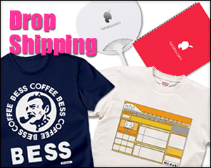

Android App Development

ネットで流れた怖い話
読み物系アプリの先駆けとして開発。

電波回復
実質2行のコードで185万以上の売上を記録。

バッテロイド
バッテリー管理の定番シリーズ。

ゴキブリバリア
超音波による虫除け（ジョーク）アプリ。

Modokiシリーズ
様々な機能を「もどき」として再現したシリーズ。

Stop Crying Baby
赤ちゃんの泣き止み支援アプリ。

SMA*POTO
本ポートフォリオサイト表示用のガワアプリ。
Media & Interviews

週刊SPA! 6位
副業ランキングにてインタビュー掲載。

ASCII.jp 取材
「顔の見えるインターネット」成功戦略特集。

TV「バズトーク」
番組内でココローグが紹介された際の資料。

雑誌掲載実績集
20冊以上のランキング雑誌に掲載された実績。

お〜いお茶 優秀賞
自作俳句が全国の茶缶に掲載されました。

ネトラン 初掲載
ネットランナー誌に初めて掲載された際の記事。

100人編集長マップ
ネトラン100人編集長企画の全体マップ。

カルマからの挑戦状
ネトラン100人編集長として執筆した記事。

面白動画50連発
ASCII.jpにてお正月恒例の大型執筆記事。

ココローグ掲載集
多方面の雑誌で紹介された際のまとめ資料。

ウイルスバスター優秀賞
トレンドマイクロ社のコンテストにて受賞。
Web & Writing

ココローグ (100万PV)
最高月間100万PVを達成したメインメディア。

あんこじ
自社Androidアプリのポータルサイト運営。

YouTube大辞典
書籍化企画としてノミネートされた企画資料。

企業案件PR記事
アルファブロガーとしての企業PR執筆実績。

パロディ商品販売
ドロップシッピングを活用した企画・販売。
Other

駆け込み演劇祭
近大・阪大・大工大3校演劇祭の企画長実績。

ペタリンガー参画
Webコミュニティ構築への中心的な関わり。

SEGA トライアル参加
公式バーチャル空間サービスの招待ブロガー。